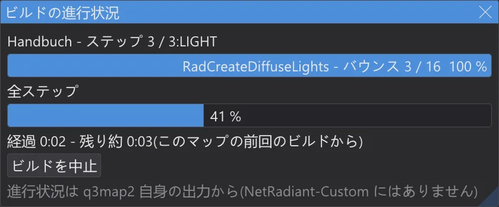
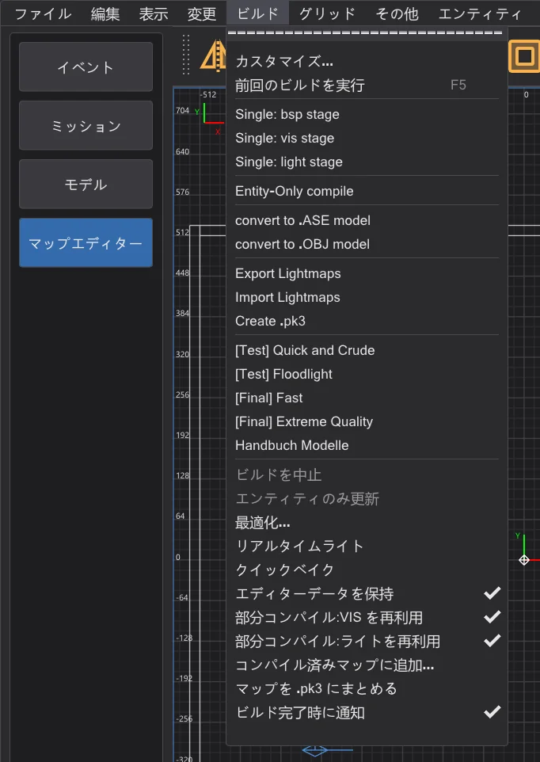
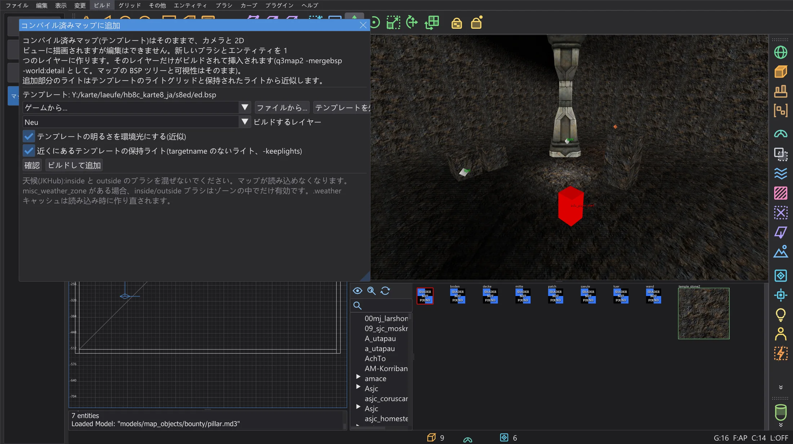
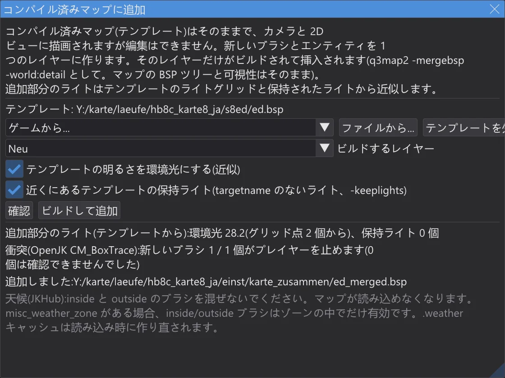

マップとシーン
マップエディター:ビルドの進行状況と部分コンパイル
ビルドがどこまで進み、あとどれくらいかかるかを確認し、変わった部分だけを再ビルドし(結果はフルビルドと同じ)、マップを再コンパイルせずにコンパイル済みマップへ新しい部分を追加します。
ビルドの進行状況#

- ビルド メニューのビルドの実行中、ビルドの進行状況 ウィンドウにはエントリー、ステップとその段階(BSP、VIS、LIGHT)、q3map2 が今いるフェーズとその進み具合(q3map2 が出力する点と数字、またはバウンス)、全ステップのバー、そして時間が表示されます。
- 残り時間:あるエントリーでマップを初めてビルドするときは、実行中のフェーズから見積もって「少なくとも」と表示します。2 回目以降は、このマップをこのエントリーで前回ビルドしたときの時間から求めます。ステップごとの時間は設定フォルダーの
karte_bauzeiten.jsonに保存されます。 - ビルドが終わると、コンソールに各ステップの時間が前回のビルドとの比較つきで表示されます:
1 BSP: 0.4 s(前回のビルド 0.5 秒、-20 %)。 - ウィンドウの ビルドを中止 は、ビルド > ビルドを中止 と同じく q3map2 を停止します。
- ビルド > ビルド完了時に通知(既定でオン):ビルドが終わったときに JK Studio が前面のウィンドウでなければ、タスクバーのボタンが点滅します。音もダイアログもありません。
進行状況は q3map2 自身の出力から得ています。ライトマップの多いフェーズや長いバウンスは飛び飛びに進みます。残り時間の精度は前回のビルドとどれだけ比べられるかで決まり、別のエントリー・別のスイッチ・コンピューターの負荷で変わります。
部分コンパイル#

ビルド メニューの 2 つのスイッチで、前回から変わっていない部分を毎回のビルドで再利用します。結果はフルビルドの .bsp とバイト単位で同じです。ctest q3map2_teilbau が両方の方法でマップをビルドし、ファイルを比較しています。
- 部分コンパイル:VIS を再利用:
-visが-bhedvisreuse付きで実行されます。bhed_q3map2 は可視性をポータルファイルとスイッチと一緒に<マップ>.bhedvisに保存します。ポータル(.prt)、スイッチ、_farplanedistキーが同じなら、計算せずに可視性をコピーし、コンソールに visibility reused と表示します。ポータルが変わるのは構造ブラシを変えたときだけで、エンティティ・detail ブラシ・パッチ・テクスチャでは変わりません。 - 部分コンパイル:ライトを再利用:
-lightが-bhedlightcache付きで実行されます。bhed_q3map2 はすべてのライトマップとライトグリッドを、入力のすべて(ジオメトリ、そこに届くライト、スイッチ)の指紋と一緒に<マップ>.bhedlightに保存します。次の実行では指紋が変わったライトマップだけを計算します。ライトを 1 つ動かすと、そのライトが届くライトマップだけが再計算されます。コンソールにキャッシュから取った数が表示されます:light cache: 9 of 14 lightmaps …。 - 後処理だけを変えた場合(
-gamma、-exposure、-compensate、-saturation、-contrast、-gridscale、-gridambientscale、または worldspawn のキー_minlight、_minvertexlight、_mingridlight):すべてのライトマップとグリッドをキャッシュから取り、レイを 1 本も飛ばさずに後処理だけを実行し直します。
-bounce を使うとライトキャッシュは使われません。バウンス光はすべてのライトマップを互いに結び付けるためです。複数スレッドでは -vis 自体が実行ごとにわずかに異なることがあります(マップエディター:速度とリアルタイムライト を参照)。再利用される可視性は前回の実行のものです。フルビルドと比べるときは -vis -threads 1 を使ってください。キャッシュファイルはマップの隣にあり、削除するとフルビルドになります。.pk3 には入れません。コンパイル済みマップに追加する#

- 1
追加部分を作るソースマップ(または新しいマップ)を開き、ビルド > コンパイル済みマップに追加 を選びます。テンプレートにはゲームのマップ(ゲームから)または任意の .bsp(ファイルから)を使います。テンプレートはカメラと 2D ビューに描画され、選択も変更もできません。
- 2
追加部分(ブラシ、パッチ、エンティティ)を専用のレイヤーに作り、ビルドするレイヤー でそのレイヤーを選びます(現在のレイヤーが選ばれています)。
- 3
確認 はレイヤーをビルドして下の確認を行いますが、何も追加しません。ビルドして追加 はレイヤーをビルドし(
-meta、-light -fast -samples 2)、q3map2 -mergebsp -world -fixnamesで挿入します。テンプレートのワールドに detail として入り、テンプレートの BSP ツリー・可視性・ライトマップはそのままです。結果は設定フォルダー内のkarte_zusammenフォルダーにある<テンプレート>_merged.bspで、テンプレート自体は変更されません。

確認する内容
- 天候ブラシ:
system/insideとsystem/outsideを混ぜてはいけません。結合後に両方を含むマップは読み込めません。そうなる場合は何も追加しません。 - 天候ゾーン:テンプレートか追加部分に
misc_weather_zoneエンティティがあると、inside/outside ブラシはゾーンの中でだけ有効です。どのゾーンにも入っていない追加部分の天候ブラシは効果がないため、警告が出ます。 - 名前:テンプレートでも使われている追加部分の
targetやtargetnameは-fixnamesによって名前が変わり、テンプレートと追加部分のつながりは失われます。ダイアログにその名前が表示されます。 - 上限:結合した .bsp はオプティマイザーと同じように数えられます。上限を超えるとエラーです。
- 衝突:結合した .bsp をゲームの衝突モデル(移植した OpenJK
CM_BoxTrace)に読み込みます。新しい固体ブラシはどれも、外から入ってくるプレイヤーの箱を止めなければなりません。
追加部分のライトは近似です。q3map2 はテンプレートのジオメトリを考慮して追加部分を照らせません。テンプレートの明るさを環境光にする(近似) は追加部分の周りのテンプレートのライトグリッドの平均を環境光にし、近くにあるテンプレートの保持ライト(targetname のないライト、-keeplights) はテンプレートに残っている targetname のないライトを使います(これがあるのは エディターデータを保持(
-keeplights)でビルドしたマップだけです)。テンプレートのライトグリッドは更新されないので、追加部分の近くのモデルやプレイヤーの明るさは以前のままです。完成版はすべてをフルビルドしてください。JKHub の天候ブラシのスレッドにある天候のルール:1 つのマップで inside と outside のブラシを混ぜないこと。天候ゾーンがある場合、ブラシはゾーンの中でだけ働くこと。ゲームはマップの読み込み時に
.weather キャッシュファイルを作り直すので、古いファイルを消す必要はないこと。